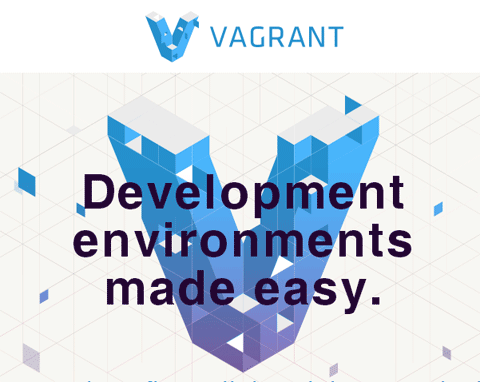
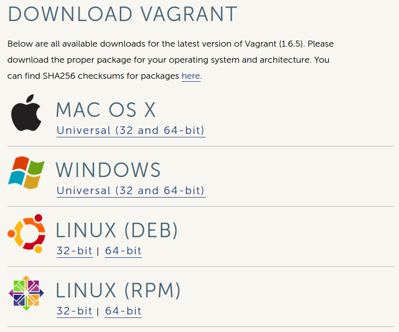

Vagrant and Chef-Solo
Get and Install Vagrant
$ vagrant --version
Vagrant 1.6.5https://www.vagrantup.com/downloads.html
- Check version: vagrant --version
Install VirtualBox
$ sudo apt-get install virtualbox $ vboxmanage --version 4.3.10_Ubuntur93012
Project Setup
$ vagrant initThis command will create a Vagrant file with the minimun required configuration.
The primary function of the Vagrantfile is to describe the type of machine required for a project, and how to configure and provision these machines.
- Remove comments
config.vm.box = "precise64"
config.vm.box_url = "http://files.vagrantup.com/precise64.box"
Up and Running
$ vagrant upOther Commands
$ vagrant status $ vagrant ssh $ vagrant destroy
Vagrant Plugins
Install the following plugins
$ vagrant plugin install vagrant-omnibus $ vagrant plugin install vagrant-proxyconf
Add to the Vagrantfile
# config.omnibus.chef_version = :latest config.omnibus.chef_version = "11.16.4" config.proxy.http = "http://proxy:port/" config.proxy.https = "http://proxy:port/"
Chef-Solo
Cookbook
- unit of configuration for distribution
- scenarios (components that are required)
- Chef maintains a collection of cookbooks
Chef-Solo
Installation
# curl -L https://www.opscode.com/chef/install.sh | bash
# chef-solo --version
Chef: 11.16.4Chef-Solo
Initial Chef Configuration
$ wget http://github.com/opscode/chef-repo/tarball/master $ tar -zxf master $ mv opscode-chef-repo* chef-repo $ rm master
Knife Configuration
$ mkdir .chef $ echo "cookbook_path [ 'cookbooks' ]" > .chef/knife.rb
- Add to the file: .chef/knife.rb
- http_proxy "http://proxy:port"
- https_proxy "http://proxy:port"
Getting Cookbooks
Our first Chef cookbook
apt
$ knife cookbook site download apt $ tar zxf apt* $ rm apt*.tar.gz
Getting Cookbooks
redis
$ knife cookbook site download redis $ tar zxf redis* $ rm redis*.tar.gz
Getting Cookbooks
nginx
$ knife cookbook site download nginx $ tar zxf nginx* $ rm nginx*.tar.gz
Add Cookbooks to Vagrant
config.vm.provision :chef_solo do |chef| chef.cookbooks_path = "chef-repo/cookbooks" chef.data_bags_path = "chef-repo/data_bags" chef.add_recipe "apt" chef.add_recipe "redis::install_from_package" chef.add_recipe "nginx" end
Get Dependencies
# Dependencies for ... $ knife cookbook site download runit $ knife cookbook site download install_from $ knife cookbook site download metachef $ tar zxf runit* # Dependencies for ... $ knife cookbook site download build-essential $ knife cookbook site download yum $ knife cookbook site download yum-epel # Dependencies for nginx $ knife cookbook site download ohai $ knife cookbook site download bluepill $ knife cookbook site download rsyslog
Synced Folders
config.vm.synced_folder ".", "/vagrant", id: "vagrant-root", disabled: true config.vm.synced_folder ".", "/paineldabolsa", create: true
https://docs.vagrantup.com/v2/synced-folders/basic_usage.html
Putting it all together
$ vagrant upWhen used behind a proxy, you should press Ctrl+C and restart the process using vagrant reload. #1 try: 10 minutes nd broke.
Provider for Digital Ocean
Questions?

Thank you!
Fernando Espíndola
On Github
https://github.com/fernandoe/training-vagrant https://github.com/fernandoe/paineldabolsa-server